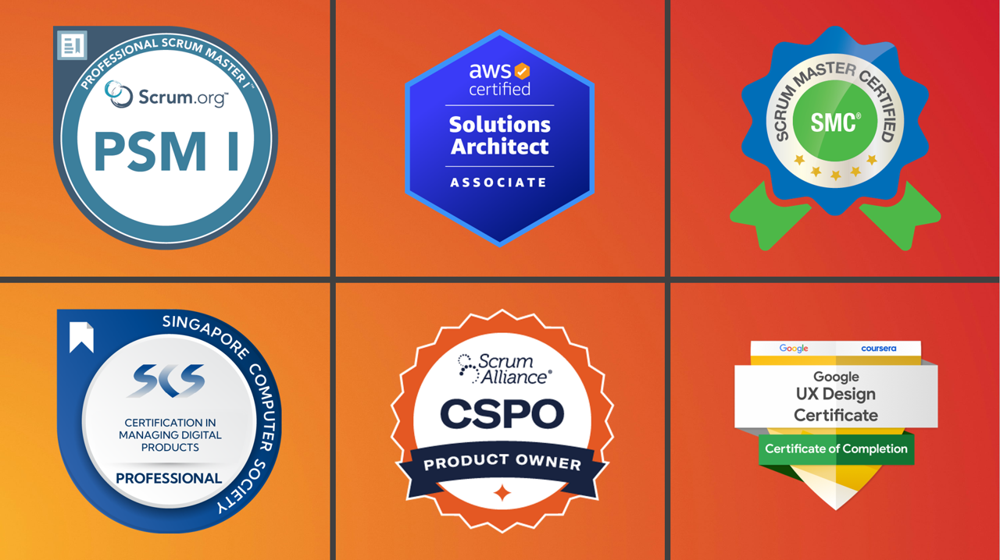

Intro
Results-driven and versatile Product cum Project Manager with over 6
years of experience in successfully leading cross-functional teams,
overseeing product development lifecycles, and delivering projects
on time and within budget. Skilled in managing both product strategy
and project execution, driving innovation, and achieving business
objectives. Seeking a challenging position as a Product cum Project
Manager to leverage my expertise and contribute to the success of a
dynamic organization.
Skills

- Over 3 years of experience as a Product Manager
- Over 3 years of experience as a Senior Project Manager
-
Certified Scrum Master (ScrumStudy - SMC, Scrum.org - PSM I)
- Certified AWS Engagement Security Consultant
-
Certified Senior IT Project Manager (Singapore Computer Society)
- Certified Google User Experience (UX) Design
- Certified Deep Neural Network Technicial using PyTorch
- Completed Fundamentals of Generative AI course - Google
- Certifed Oracle Cloud Infrastructure Associate
- Certified Microsoft Azure Cloud Services Associate
- Completed Fundamentals AWS Cloud Essentials - AWS
- Web stack (VueJS, Laravel)
My Work

During my free time in the past, I worked on an indexing system for
one of my all time favourite game, King's Raid. Somewhere of the mid
2018, was the first iteration of my indexing system for the game,
but was soon takes down after a year due to lack of maintainence and
compatibility issues with mobile view. Yet, I often find my self as
a contributer in Wikipedias on the game King's Raid.
PC building is one of my main project which acts as my side income,
it consists of fixing older system and/or upgrading them as well as
building state of the art gaming machines capable of running the
most demanding Triple-A games today. With tiny margin of profit
ranging from 1-5% for PC building I find it less of a source of
revenue, rather a hobby that I favor.
Contact
+60 147355823 Malaysia
+65 90878062 Singapore
contactme@jonathanfoong.com